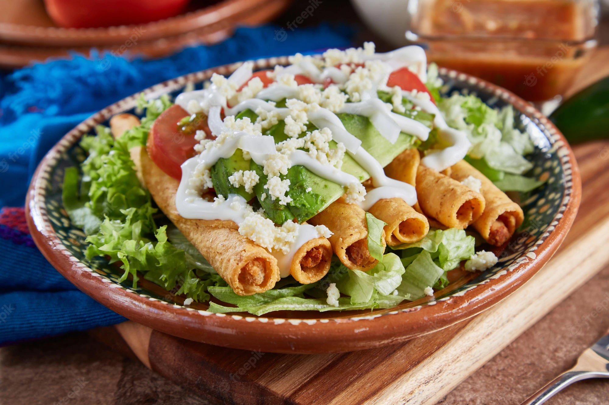

Tacos Dorados

Tacos Dorados
El nombre de estos taquitos dorados "Flautas", se les a dado por su parecido al instrumento musical llamado flauta, y porque los puedes sostener con los dedos para comerlos, como se agarra ese isntrumento. Bueno, ese es mi punto de vista. En algunas partes de México, estos tacos se elaboran con delgadas tortillas de maíz de forma ovalada y larga, se fríen en aceite y hay quienes lo hacen con manteca.
Ingredientes
- Tortillas de maíz
- Relleno de su elección carne de res, pollo o papa
- Palillos de dientes
- Aceite vegetal
- Queso "Cotija"
Procedimiento
- Pela y corta las papas en cubos grandes, cocina en agua con sal hasta que estén tiernas, no vayas a cocinarlas en exceso. Escurra y macera. Pruébalas en caso de que necesite más sal
- Calienta las tortillas en un comal para que sean más flexibles y fáciles de enrollar. Coloca el relleno de la carne cerca del borde de la tortilla.
- Ruédalas apretándolas, pero no demasiado para evitar exprimir el relleno de la tortilla.
- Asegura la tortilla con un palillo de dientes. Ruede otra tortilla con su relleno y otra vez sostenga el centro con un palillo de dientes. Puedes unirlos en pares como se muestra en la imagen.